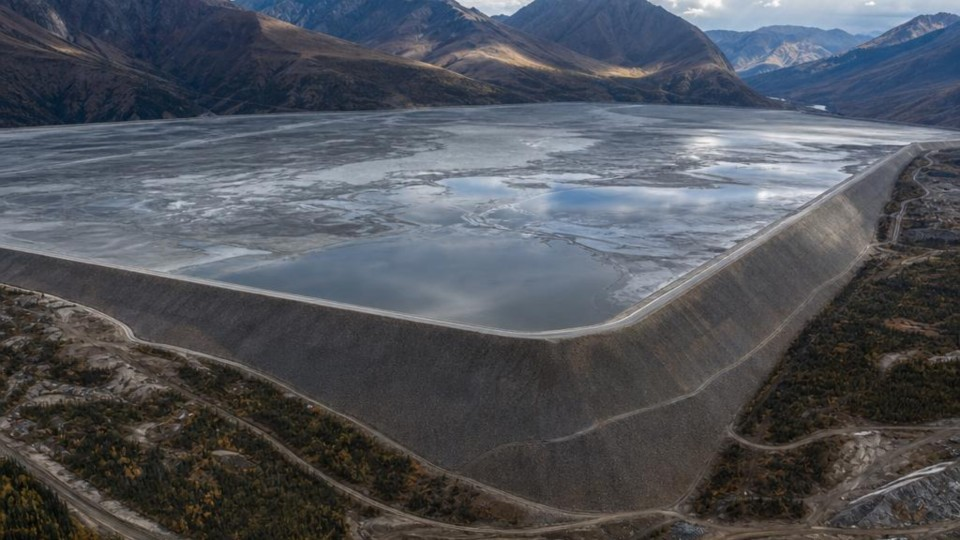

Google Project Management Specialization
Provider: Coursera
Category: Project Management
Year: 2023
Status: Completed
Geological Engineering • Mining Technology • GIS • Hydrogeology • Artificial Intelligence
Engineering Projects
Engineering Software
Technical Images
Analysis Figures

This project involved the preparation and development of a three-dimensional geological model using Leapfrog Geo from drillhole data. The work included systematic drill c...
View Case Study →
Industrial training carried out at a mining operation to develop practical engineering skills in geology, mining operations, field mapping, sampling and technical reporti...
View Case Study →
This project evaluates groundwater quality... ...
View Case Study →

Practical experience in geological modelling, hydrogeology, field mapping, mineral exploration, and engineering problem-solving.
Skilled in Leapfrog Geo, Python, GIS, QGIS, data visualization and spatial analysis for geological engineering applications.
Experienced in drill core photography, geological documentation, technical reporting, and scientific communication.
Anthony Essel Prepeh is a final-year Bachelor of Science (BSc) Geological Engineering student at Kwame Nkrumah University of Science and Technology (KNUST), Ghana.
He has developed a strong foundation in engineering geology, hydrogeology, mineral exploration, geotechnical engineering, GIS, remote sensing and mining technology through academic training, fieldwork and independent technical projects.
Anthony is passionate about integrating geological engineering with digital technologies, data analysis and artificial intelligence to improve mineral exploration, groundwater investigations and modern mining workflows. He is currently building practical projects in orebody modelling, groundwater quality analysis and professional geological software development while preparing for a career in the mining industry.
This project involved the preparation and development of a three-dimensional geological model using Leapfrog Geo from drillhole data. The work included systematic drill c...
View Case Study →
Industrial training carried out at a mining operation to develop practical engineering skills in geology, mining operations, field mapping, sampling and technical reporti...
View Case Study →
This project evaluates groundwater quality... ...
View Case Study →
Engineering Projects
Maps & Models
Technical Images
Engineering Software
Engineering Reports
Orebody Models
Location: Kumasi, Ghana
Experience Type: Academic Research
Status: In Progress
Conducting final-year undergraduate research as part of the Bachelor of Science (BSc) Geological Engineering programme, involving technical investigation, data interpretation and scientific reporting.
Location: Kumasi, Ghana
Experience Type: Academic Project
Status: In Progress
Developing geological models and interpreting subsurface data to support orebody evaluation and resource estimation for engineering analysis.
Location: Kumasi, Ashanti Region, Ghana
Experience Type: Education
Status: Final Year Student
Undergraduate programme in Geological Engineering combining geology and engineering principles with specialization in engineering geology, hydrogeology, geotechnical engineering, mineral exploration, environmental geology, geological mapping, mining support engineering and infrastructure site investigation.
Provider: Coursera
Category: Project Management
Year: 2023
Status: Completed
Provider: Great Learning
Category: Data Analysis
Year: 2023
Status: Completed
I am a final-year Geological Engineering student at Kwame Nkrumah University of Science and Technology (KNUST), passionate about mineral exploration, orebody modelling, hydrogeology, GIS, mining technology, Python automation, and artificial intelligence. I welcome opportunities for National Service, graduate engineering positions, research collaborations, and innovative mining projects.